2026 Higher Computing Science questions
Source: Scottish Qualifications Authority (SQA) / Qualifications Scotland. This is a StemInteract HTML companion, not an official HTML edition. Selectable text is supplied alongside original page images. Use the images or original PDF for equations, powers, fractions, vector notation, tables and diagrams; text extraction cannot fully preserve mathematical layout.
Jump to a question
PDF page 1
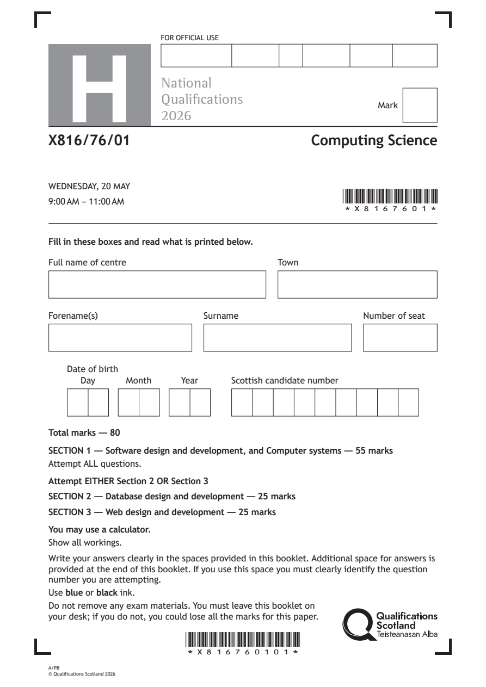
Selectable page text
FOR OFFICIAL USE
H
National
Qualications
Mark
2026
X816/76/01 Computing Science
WEDNESDAY, 20 MAY
9:00 AM – 11:00 AM
*X8167601*
Fill in these boxes and read what is printed below.
Full name of centre Town
Forename(s) Surname Number of seat
Date of birth
Day Month Year Scottish candidate number
Total marks — 80
SECTION 1 — Software design and development, and Computer systems — 55 marks
Attempt ALL questions.
Attempt EITHER Section 2 OR Section 3
SECTION 2 — Database design and development — 25 marks
SECTION 3 — Web design and development — 25 marks
You may use a calculator.
Show all workings.
Write your answers clearly in the spaces provided in this booklet. Additional space for answers is
provided at the end of this booklet. If you use this space you must clearly identify the question
number you are attempting.
Use blue or black ink.
Do not remove any exam materials. You must leave this booklet on
your desk; if you do not, you could lose all the marks for this paper.
*X816760101*
A/PB
© Qualifications Scotland 2026PDF page 2
Question 1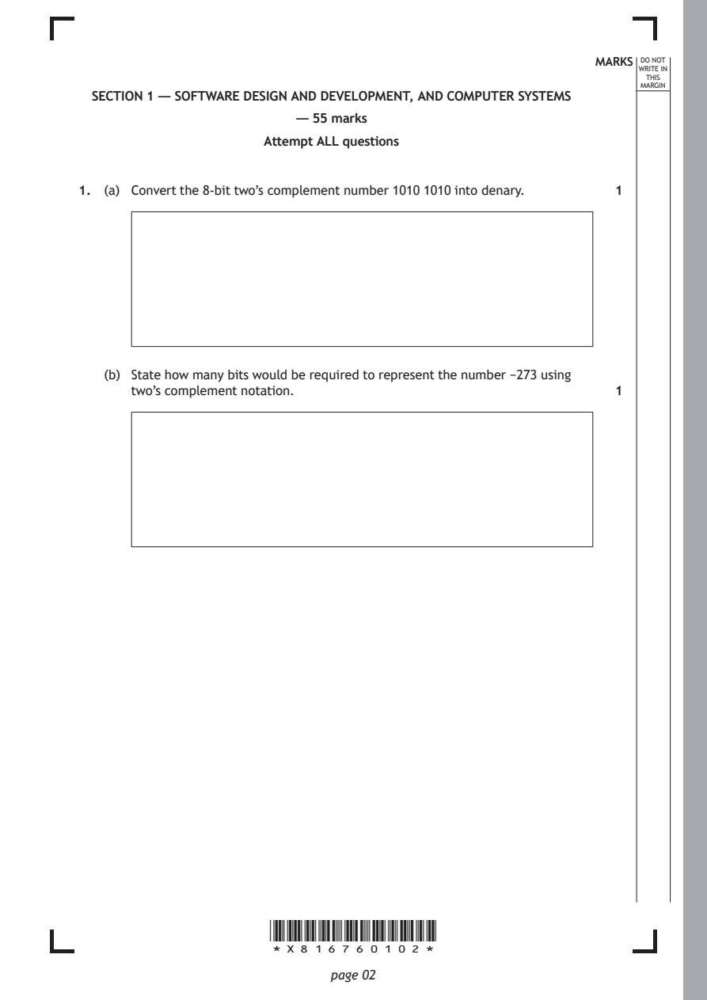
Selectable page text
MARKS DO NOT
WRITE IN
THIS
MARGIN
SECTION 1 — SOFTWARE DESIGN AND DEVELOPMENT, AND COMPUTER SYSTEMS
— 55 marks
Attempt ALL questions
1. (a) Convert the 8‑bit two’s complement number 1010 1010 into denary. 1
(b) State how many bits would be required to represent the number −273 using
two’s complement notation. 1
*X816760102*
page 02PDF page 3
Question 2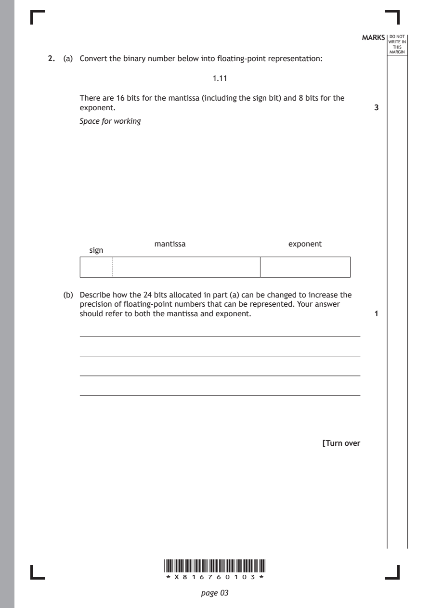
Selectable page text
MARKS DO NOT
WRITE IN
THIS
MARGIN
2. (a) Convert the binary number below into floating‑point representation:
1.11
There are 16 bits for the mantissa (including the sign bit) and 8 bits for the
exponent. 3
Space for working
mantissa exponent
sign
(b) Describe how the 24 bits allocated in part (a) can be changed to increase the
precision of floating‑point numbers that can be represented. Your answer
should refer to both the mantissa and exponent. 1
[Turn over
*X816760103*
page 03PDF page 4
Question 3Question 4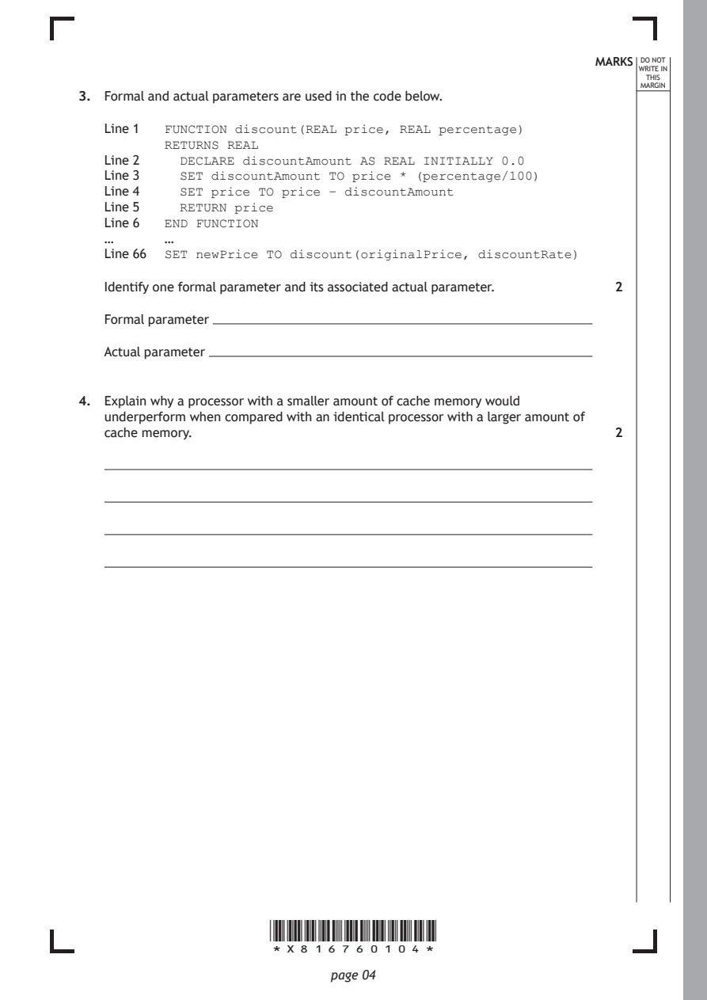
Selectable page text
MARKS DO NOT
WRITE IN
THIS
MARGIN
3. Formal and actual parameters are used in the code below.
Line 1
FUNCTION discount(REAL price, REAL percentage)
RETURNS REAL
Line 2
DECLARE discountAmount AS REAL INITIALLY 0.0
Line 3
SET discountAmount TO price * (percentage/100)
Line 4
SET price TO price − discountAmount
Line 5
RETURN price
Line 6
END FUNCTION
… …
Line 66
SET newPrice TO discount(originalPrice, discountRate)
Identify one formal parameter and its associated actual parameter. 2
Formal parameter
Actual parameter
4. Explain why a processor with a smaller amount of cache memory would
underperform when compared with an identical processor with a larger amount of
cache memory. 2
*X816760104*
page 04PDF page 5
Question 5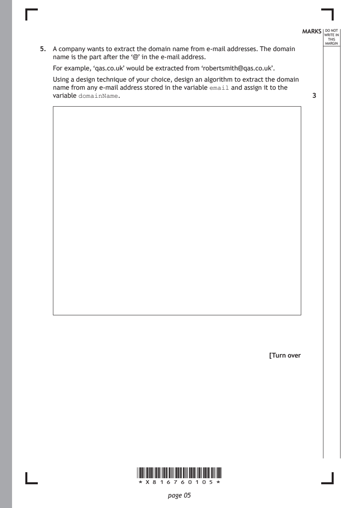
Selectable page text
MARKS DO NOT
WRITE IN
THIS
MARGIN
5. A company wants to extract the domain name from e‑mail addresses. The domain
name is the part after the ‘@’ in the e‑mail address.
For example, ‘qas.co.uk’ would be extracted from ‘robertsmith@qas.co.uk’.
Using a design technique of your choice, design an algorithm to extract the domain
name from any e‑mail address stored in the variable and assign it to the
email
variable . 3
domainName
[Turn over
*X816760105*
page 05PDF page 6
Question 6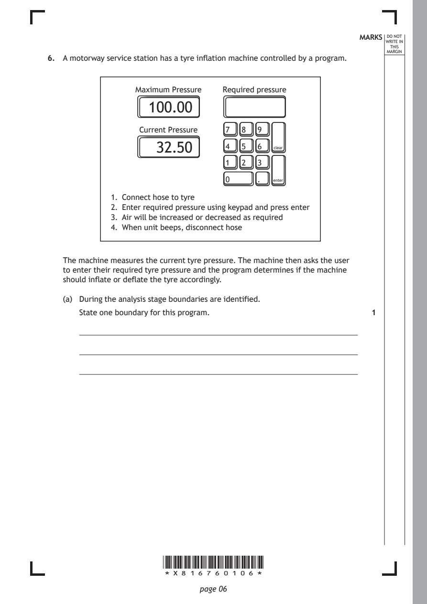
Selectable page text
MARKS DO NOT
WRITE IN
THIS
MARGIN
6. A motorway service station has a tyre inflation machine controlled by a program.
Maximum Pressure Required pressure
100.00
Current Pressure 7 8 9
32.50 4 5 6
clear
1 2 3
0 .
enter
1. Connect hose to tyre
2. Enter required pressure using keypad and press enter
3. Air will be increased or decreased as required
4. When unit beeps, disconnect hose
The machine measures the current tyre pressure. The machine then asks the user
to enter their required tyre pressure and the program determines if the machine
should inflate or deflate the tyre accordingly.
(a) During the analysis stage boundaries are identified.
State one boundary for this program. 1
*X816760106*
page 06PDF page 7
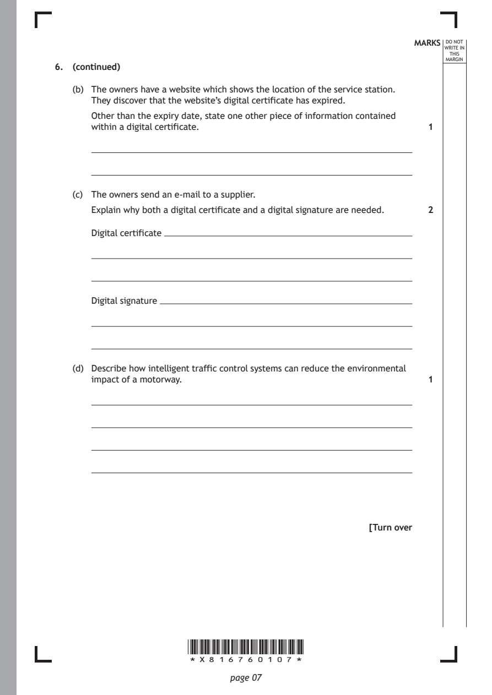
Selectable page text
MARKS DO NOT
WRITE IN
THIS
MARGIN
6. (continued)
(b) The owners have a website which shows the location of the service station.
They discover that the website’s digital certificate has expired.
Other than the expiry date, state one other piece of information contained
within a digital certificate. 1
(c) The owners send an e‑mail to a supplier.
Explain why both a digital certificate and a digital signature are needed. 2
Digital certificate
Digital signature
(d) Describe how intelligent traffic control systems can reduce the environmental
impact of a motorway. 1
[Turn over
*X816760107*
page 07PDF page 8
Question 7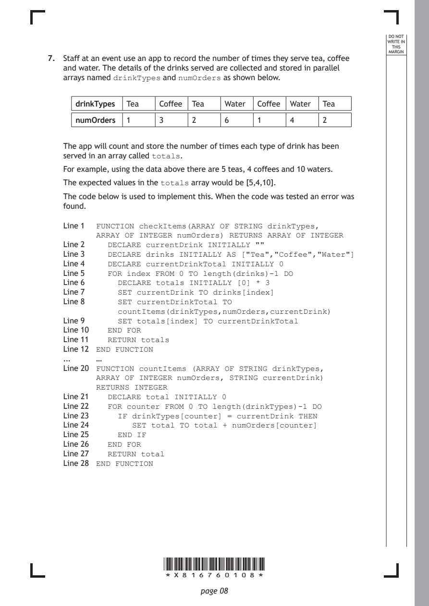
Selectable page text
DO NOT
WRITE IN
THIS
MARGIN
7. Staff at an event use an app to record the number of times they serve tea, coffee
and water. The details of the drinks served are collected and stored in parallel
arrays named and as shown below.
drinkTypes numOrders
drinkTypes Tea Coffee Tea Water Coffee Water Tea
numOrders 1 3 2 6 1 4 2
The app will count and store the number of times each type of drink has been
served in an array called .
totals
For example, using the data above there are 5 teas, 4 coffees and 10 waters.
The expected values in the array would be [5,4,10].
totals
The code below is used to implement this. When the code was tested an error was
found.
Line 1
FUNCTION checkItems(ARRAY OF STRING drinkTypes,
ARRAY OF INTEGER numOrders) RETURNS ARRAY OF INTEGER
Line 2
DECLARE currentDrink INITIALLY ""
Line 3
DECLARE drinks INITIALLY AS ["Tea","Coffee","Water"]
Line 4
DECLARE currentDrinkTotal INITIALLY 0
Line 5
FOR index FROM 0 TO length(drinks)-1 DO
Line 6
DECLARE totals INITIALLY [0] * 3
Line 7
SET currentDrink TO drinks[index]
Line 8
SET currentDrinkTotal TO
countItems(drinkTypes,numOrders,currentDrink)
Line 9
SET totals[index] TO currentDrinkTotal
Line 10
END FOR
Line 11
RETURN totals
Line 12
END FUNCTION
... …
Line 20
FUNCTION countItems (ARRAY OF STRING drinkTypes,
ARRAY OF INTEGER numOrders, STRING currentDrink)
RETURNS INTEGER
Line 21
DECLARE total INITIALLY 0
Line 22
FOR counter FROM 0 TO length(drinkTypes)-1 DO
Line 23
IF drinkTypes[counter] = currentDrink THEN
Line 24
SET total TO total + numOrders[counter]
Line 25
END IF
Line 26
END FOR
Line 27
RETURN total
Line 28
END FUNCTION
*X816760108*
page 08PDF page 9
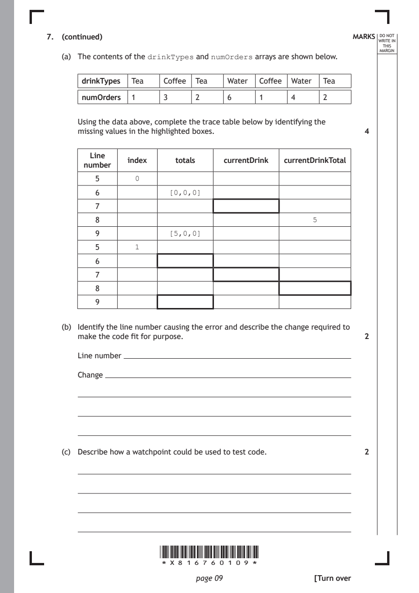
Selectable page text
7. (continued) MARKS DO NOT
WRITE IN
THIS
MARGIN
(a) The contents of the and arrays are shown below.
drinkTypes numOrders
drinkTypes Tea Coffee Tea Water Coffee Water Tea
numOrders 1 3 2 6 1 4 2
Using the data above, complete the trace table below by identifying the
missing values in the highlighted boxes. 4
Line
index totals currentDrink currentDrinkTotal
number
5
0
6
[0,0,0]
7
8
5
9
[5,0,0]
5
1
6
7
8
9
(b) Identify the line number causing the error and describe the change required to
make the code fit for purpose. 2
Line number
Change
(c) Describe how a watchpoint could be used to test code. 2
*X816760109*
page 09 [Turn overPDF page 10
Question 8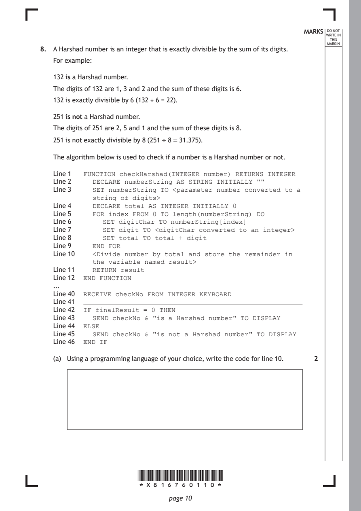
Selectable page text
MARKS DO NOT
WRITE IN
THIS
MARGIN
8. A Harshad number is an integer that is exactly divisible by the sum of its digits.
For example:
132 is a Harshad number.
The digits of 132 are 1, 3 and 2 and the sum of these digits is 6.
132 is exactly divisible by 6 (132 ÷ 6 = 22).
251 is not a Harshad number.
The digits of 251 are 2, 5 and 1 and the sum of these digits is 8.
251 is not exactly divisible by 8 (251 ÷ 8 = 31.375).
The algorithm below is used to check if a number is a Harshad number or not.
Line 1
FUNCTION checkHarshad(INTEGER number) RETURNS INTEGER
Line 2
DECLARE numberString AS STRING INITIALLY ""
Line 3
SET numberString TO <parameter number converted to a
string of digits>
Line 4
DECLARE total AS INTEGER INITIALLY 0
Line 5
FOR index FROM 0 TO length(numberString) DO
Line 6
SET digitChar TO numberString[index]
Line 7
SET digit TO <digitChar converted to an integer>
Line 8
SET total TO total + digit
Line 9
END FOR
Line 10
<Divide number by total and store the remainder in
the variable named result>
Line 11
RETURN result
Line 12
END FUNCTION
...
Line 40
RECEIVE checkNo FROM INTEGER KEYBOARD
Line 41
Line 42
IF finalResult = 0 THEN
Line 43
SEND checkNo & "is a Harshad number" TO DISPLAY
Line 44
ELSE
Line 45
SEND checkNo & "is not a Harshad number" TO DISPLAY
Line 46
END IF
(a) Using a programming language of your choice, write the code for line 10. 2
*X816760110*
page 10PDF page 11
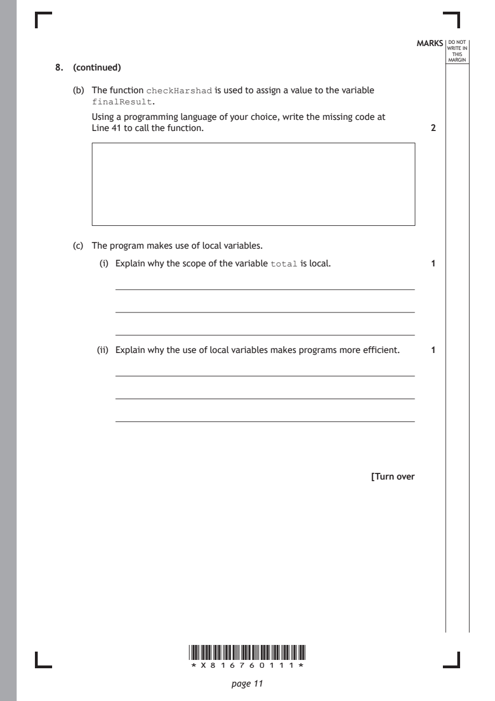
Selectable page text
MARKS DO NOT
WRITE IN
THIS
MARGIN
8. (continued)
(b) The function is used to assign a value to the variable
checkHarshad
.
finalResult
Using a programming language of your choice, write the missing code at
Line 41 to call the function. 2
(c) The program makes use of local variables.
(i) Explain why the scope of the variable is local. 1
total
(ii) Explain why the use of local variables makes programs more efficient. 1
[Turn over
*X816760111*
page 11PDF page 12
Question 9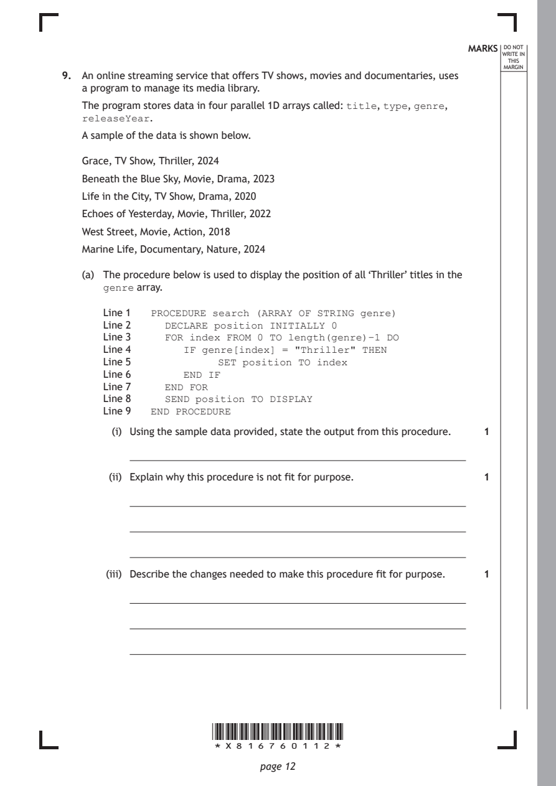
Selectable page text
MARKS DO NOT
WRITE IN
THIS
MARGIN
9. An online streaming service that offers TV shows, movies and documentaries, uses
a program to manage its media library.
The program stores data in four parallel 1D arrays called: , , ,
title type genre
.
releaseYear
A sample of the data is shown below.
Grace, TV Show, Thriller, 2024
Beneath the Blue Sky, Movie, Drama, 2023
Life in the City, TV Show, Drama, 2020
Echoes of Yesterday, Movie, Thriller, 2022
West Street, Movie, Action, 2018
Marine Life, Documentary, Nature, 2024
(a) The procedure below is used to display the position of all ‘Thriller’ titles in the
array.
genre
Line 1
PROCEDURE search (ARRAY OF STRING genre)
Line 2
DECLARE position INITIALLY 0
Line 3
FOR index FROM 0 TO length(genre)−1 DO
Line 4
IF genre[index] = "Thriller" THEN
Line 5
SET position TO index
Line 6
END IF
Line 7
END FOR
Line 8
SEND position TO DISPLAY
Line 9
END PROCEDURE
(i) Using the sample data provided, state the output from this procedure. 1
(ii) Explain why this procedure is not fit for purpose. 1
(iii) Describe the changes needed to make this procedure fit for purpose. 1
*X816760112*
page 12PDF page 13
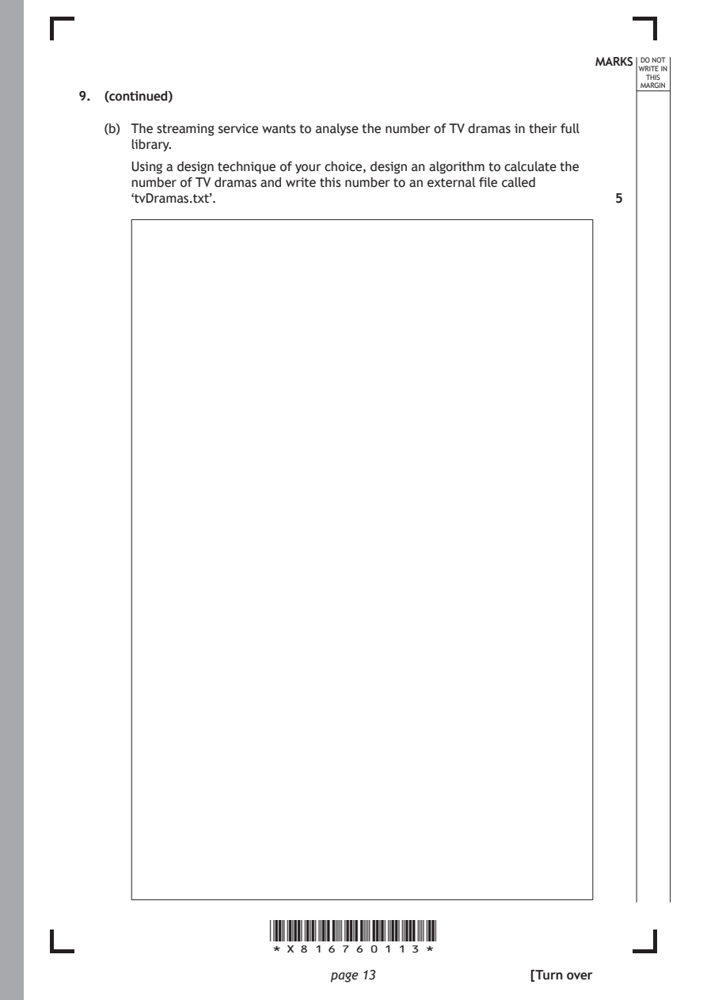
Selectable page text
MARKS DO NOT
WRITE IN
THIS
MARGIN
9. (continued)
(b) The streaming service wants to analyse the number of TV dramas in their full
library.
Using a design technique of your choice, design an algorithm to calculate the
number of TV dramas and write this number to an external file called
‘tvDramas.txt’. 5
*X816760113*
page 13 [Turn overPDF page 14
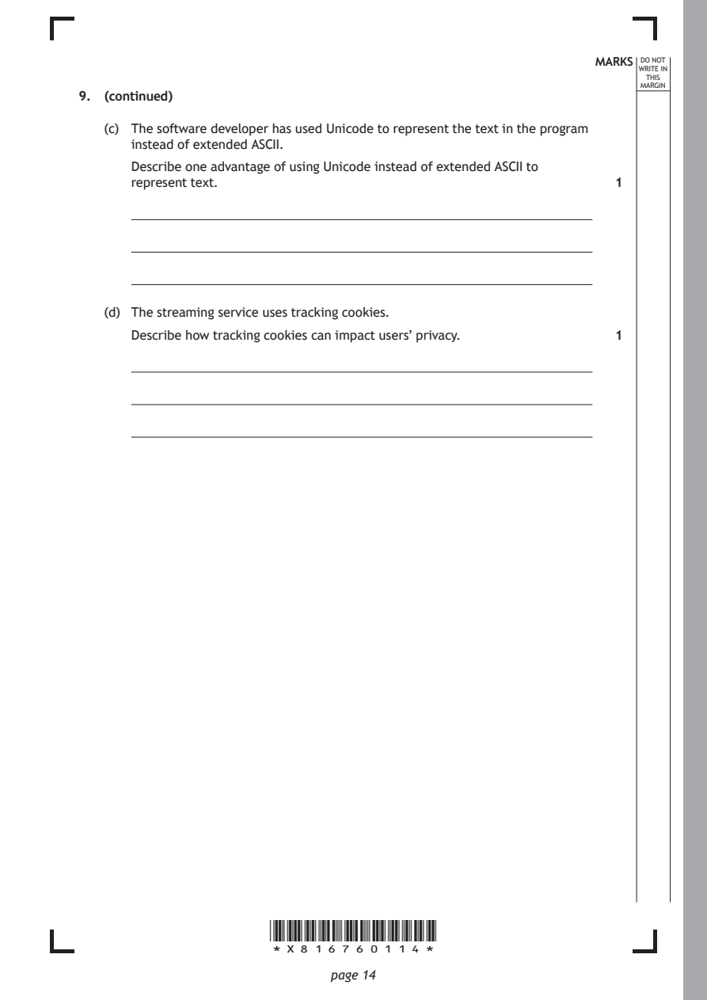
Selectable page text
MARKS DO NOT
WRITE IN
THIS
MARGIN
9. (continued)
(c) The software developer has used Unicode to represent the text in the program
instead of extended ASCII.
Describe one advantage of using Unicode instead of extended ASCII to
represent text. 1
(d) The streaming service uses tracking cookies.
Describe how tracking cookies can impact users’ privacy. 1
*X816760114*
page 14PDF page 15
Question 10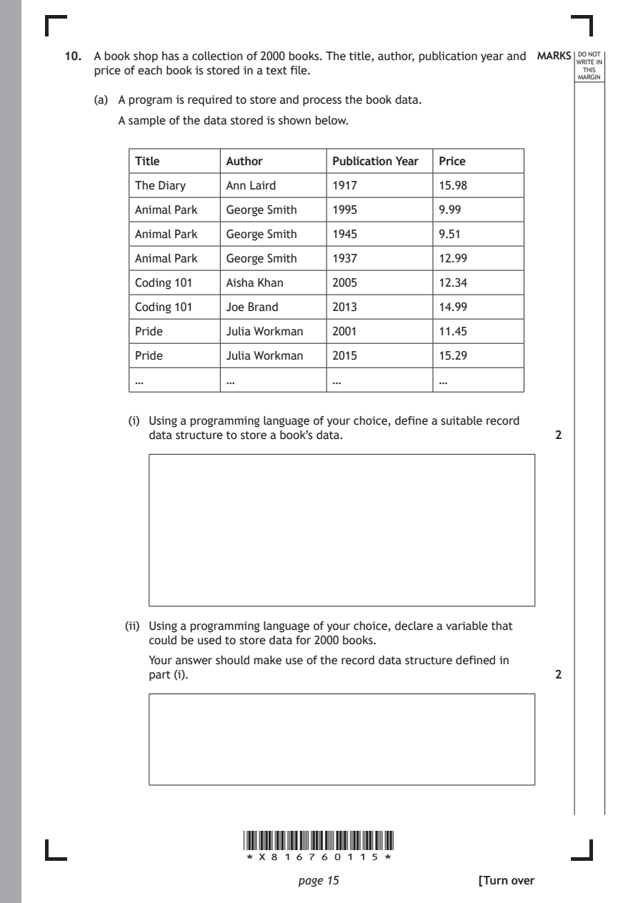
Selectable page text
10. A book shop has a collection of 2000 books. The title, author, publication year and MARKS DO NOT
WRITE IN
price of each book is stored in a text file. THIS
MARGIN
(a) A program is required to store and process the book data.
A sample of the data stored is shown below.
Title Author Publication Year Price
The Diary Ann Laird 1917 15.98
Animal Park George Smith 1995 9.99
Animal Park George Smith 1945 9.51
Animal Park George Smith 1937 12.99
Coding 101 Aisha Khan 2005 12.34
Coding 101 Joe Brand 2013 14.99
Pride Julia Workman 2001 11.45
Pride Julia Workman 2015 15.29
… … … …
(i) Using a programming language of your choice, define a suitable record
data structure to store a book’s data. 2
(ii) Using a programming language of your choice, declare a variable that
could be used to store data for 2000 books.
Your answer should make use of the record data structure defined in
part (i). 2
*X816760115*
page 15 [Turn overPDF page 16
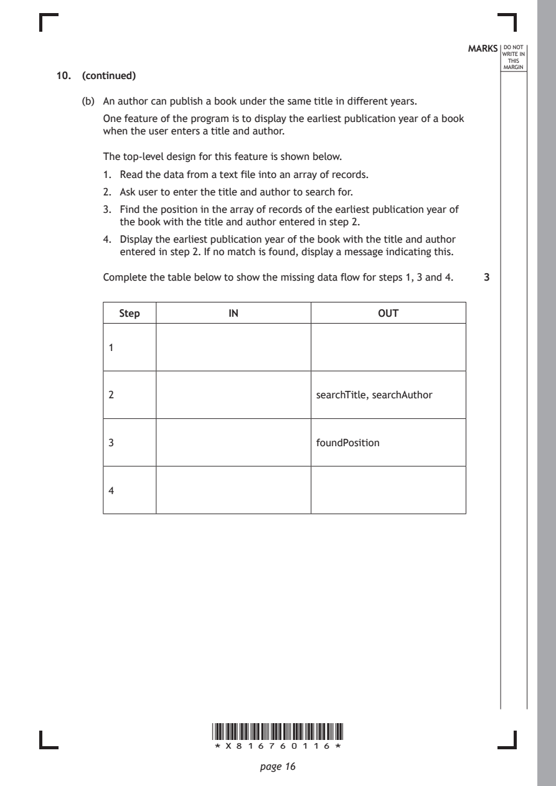
Selectable page text
MARKS DO NOT
WRITE IN
THIS
MARGIN
10. (continued)
(b) An author can publish a book under the same title in different years.
One feature of the program is to display the earliest publication year of a book
when the user enters a title and author.
The top‑level design for this feature is shown below.
1. Read the data from a text file into an array of records.
2. Ask user to enter the title and author to search for.
3. Find the position in the array of records of the earliest publication year of
the book with the title and author entered in step 2.
4. Display the earliest publication year of the book with the title and author
entered in step 2. If no match is found, display a message indicating this.
Complete the table below to show the missing data flow for steps 1, 3 and 4. 3
Step IN OUT
1
2 searchTitle, searchAuthor
3 foundPosition
4
*X816760116*
page 16PDF page 17
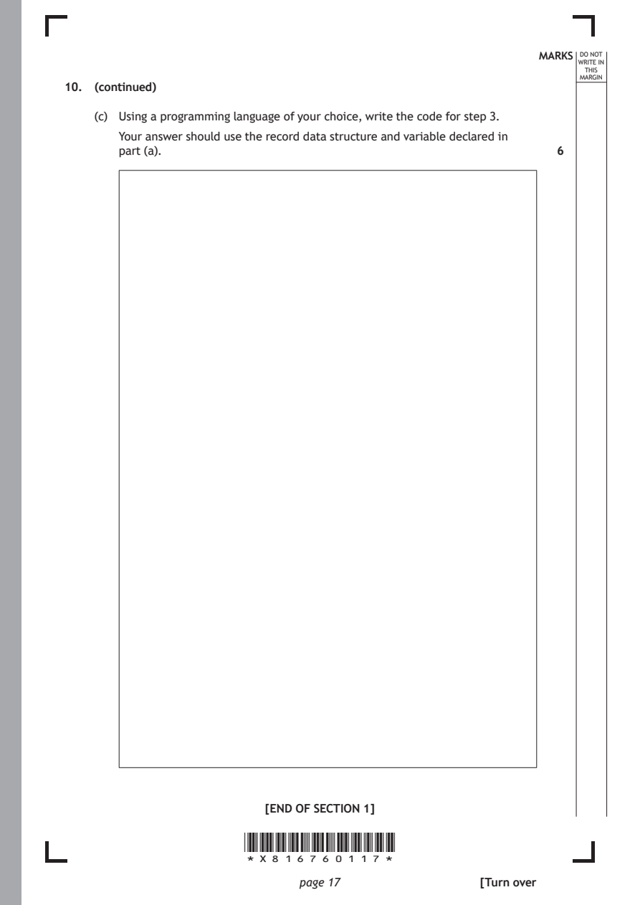
Selectable page text
MARKS DO NOT
WRITE IN
THIS
MARGIN
10. (continued)
(c) Using a programming language of your choice, write the code for step 3.
Your answer should use the record data structure and variable declared in
part (a). 6
[END OF SECTION 1]
*X816760117*
page 17 [Turn overPDF page 18
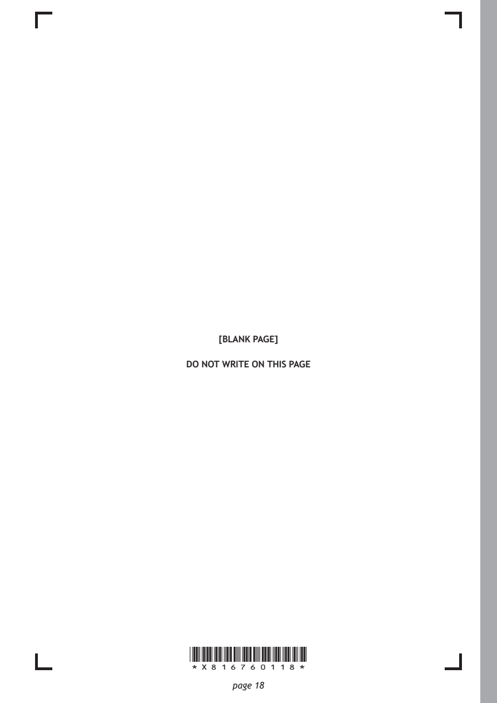
Selectable page text
[BLANK PAGE]
DO NOT WRITE ON THIS PAGE
*X816760118*
page 18PDF page 19
Question 11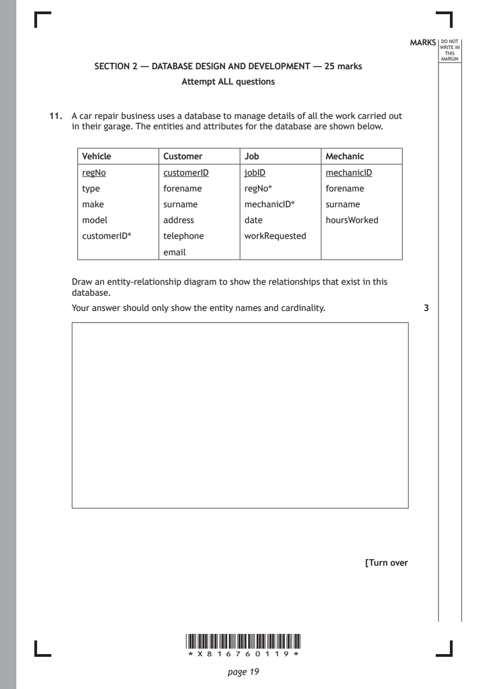
Selectable page text
MARKS DO NOT
WRITE IN
THIS
MARGIN
SECTION 2 — DATABASE DESIGN AND DEVELOPMENT — 25 marks
Attempt ALL questions
11. A car repair business uses a database to manage details of all the work carried out
in their garage. The entities and attributes for the database are shown below.
Vehicle Customer Job Mechanic
regNo customerID jobID mechanicID
type forename regNo* forename
make surname mechanicID* surname
model address date hoursWorked
customerID* telephone workRequested
email
Draw an entity‑relationship diagram to show the relationships that exist in this
database.
Your answer should only show the entity names and cardinality. 3
[Turn over
*X816760119*
page 19PDF page 20
Question 12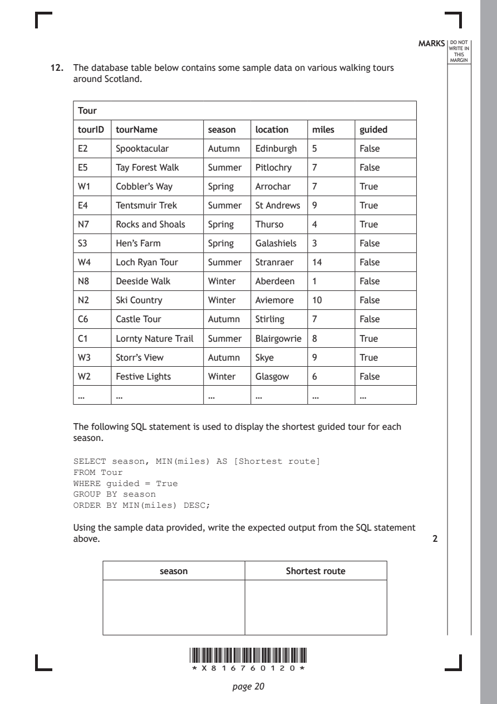
Selectable page text
MARKS DO NOT
WRITE IN
THIS
MARGIN
12. The database table below contains some sample data on various walking tours
around Scotland.
Tour
tourID tourName season location miles guided
E2 Spooktacular Autumn Edinburgh 5 False
E5 Tay Forest Walk Summer Pitlochry 7 False
W1 Cobbler’s Way Spring Arrochar 7 True
E4 Tentsmuir Trek Summer St Andrews 9 True
N7 Rocks and Shoals Spring Thurso 4 True
S3 Hen’s Farm Spring Galashiels 3 False
W4 Loch Ryan Tour Summer Stranraer 14 False
N8 Deeside Walk Winter Aberdeen 1 False
N2 Ski Country Winter Aviemore 10 False
C6 Castle Tour Autumn Stirling 7 False
C1 Lornty Nature Trail Summer Blairgowrie 8 True
W3 Storr’s View Autumn Skye 9 True
W2 Festive Lights Winter Glasgow 6 False
… … … … … …
The following SQL statement is used to display the shortest guided tour for each
season.
SELECT season, MIN(miles) AS [Shortest route]
FROM Tour
WHERE guided = True
GROUP BY season
ORDER BY MIN(miles) DESC;
Using the sample data provided, write the expected output from the SQL statement
above. 2
season Shortest route
*X816760120*
page 20PDF page 21
Question 13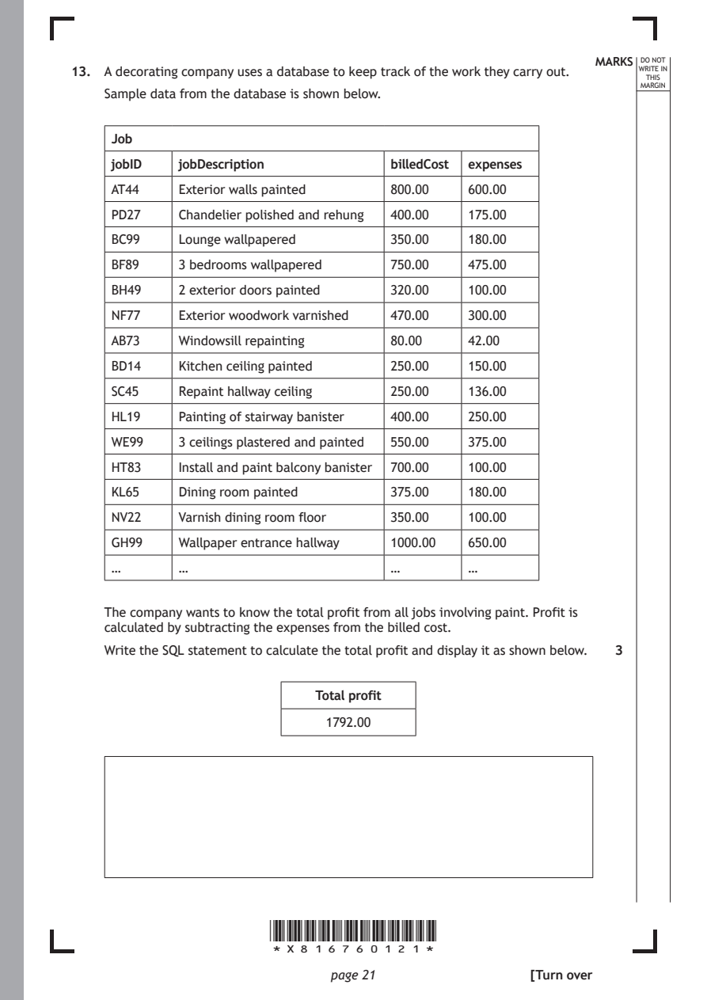
Selectable page text
MARKS DO NOT
13. A decorating company uses a database to keep track of the work they carry out. WRITE IN
THIS
MARGIN
Sample data from the database is shown below.
Job
jobID jobDescription billedCost expenses
AT44 Exterior walls painted 800.00 600.00
PD27 Chandelier polished and rehung 400.00 175.00
BC99 Lounge wallpapered 350.00 180.00
BF89 3 bedrooms wallpapered 750.00 475.00
BH49 2 exterior doors painted 320.00 100.00
NF77 Exterior woodwork varnished 470.00 300.00
AB73 Windowsill repainting 80.00 42.00
BD14 Kitchen ceiling painted 250.00 150.00
SC45 Repaint hallway ceiling 250.00 136.00
HL19 Painting of stairway banister 400.00 250.00
WE99 3 ceilings plastered and painted 550.00 375.00
HT83 Install and paint balcony banister 700.00 100.00
KL65 Dining room painted 375.00 180.00
NV22 Varnish dining room floor 350.00 100.00
GH99 Wallpaper entrance hallway 1000.00 650.00
… … … …
The company wants to know the total profit from all jobs involving paint. Profit is
calculated by subtracting the expenses from the billed cost.
Write the SQL statement to calculate the total profit and display it as shown below. 3
Total profit
1792.00
*X816760121*
page 21 [Turn overPDF page 22
Question 14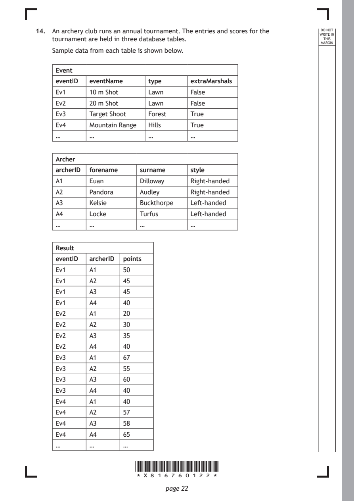
Selectable page text
14. An archery club runs an annual tournament. The entries and scores for the DO NOT
WRITE IN
tournament are held in three database tables. THIS
MARGIN
Sample data from each table is shown below.
Event
eventID eventName type extraMarshals
Ev1 10 m Shot Lawn False
Ev2 20 m Shot Lawn False
Ev3 Target Shoot Forest True
Ev4 Mountain Range Hills True
… … … …
Archer
archerID forename surname style
A1 Euan Dilloway Right‑handed
A2 Pandora Audley Right‑handed
A3 Kelsie Buckthorpe Left‑handed
A4 Locke Turfus Left‑handed
… … … …
Result
eventID archerID points
Ev1 A1 50
Ev1 A2 45
Ev1 A3 45
Ev1 A4 40
Ev2 A1 20
Ev2 A2 30
Ev2 A3 35
Ev2 A4 40
Ev3 A1 67
Ev3 A2 55
Ev3 A3 60
Ev3 A4 40
Ev4 A1 40
Ev4 A2 57
Ev4 A3 58
Ev4 A4 65
… … …
*X816760122*
page 22PDF page 23
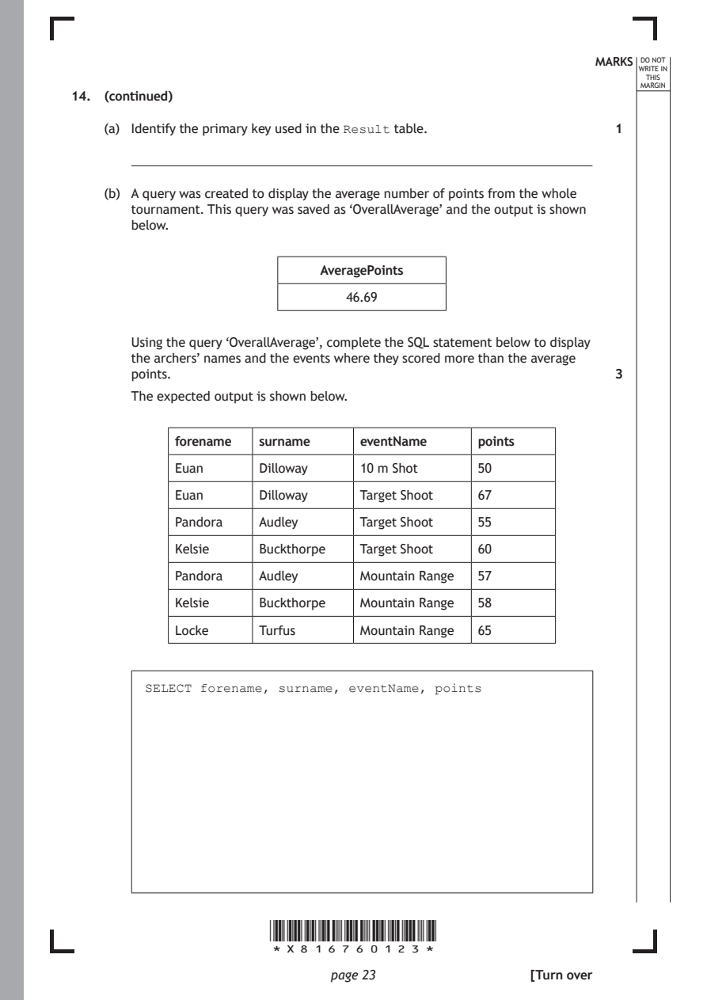
Selectable page text
MARKS DO NOT
WRITE IN
THIS
MARGIN
14. (continued)
(a) Identify the primary key used in the table. 1
Result
(b) A query was created to display the average number of points from the whole
tournament. This query was saved as ‘OverallAverage’ and the output is shown
below.
AveragePoints
46.69
Using the query ‘OverallAverage’, complete the SQL statement below to display
the archers’ names and the events where they scored more than the average
points. 3
The expected output is shown below.
forename surname eventName points
Euan Dilloway 10 m Shot 50
Euan Dilloway Target Shoot 67
Pandora Audley Target Shoot 55
Kelsie Buckthorpe Target Shoot 60
Pandora Audley Mountain Range 57
Kelsie Buckthorpe Mountain Range 58
Locke Turfus Mountain Range 65
SELECT forename, surname, eventName, points
*X816760123*
page 23 [Turn overPDF page 24
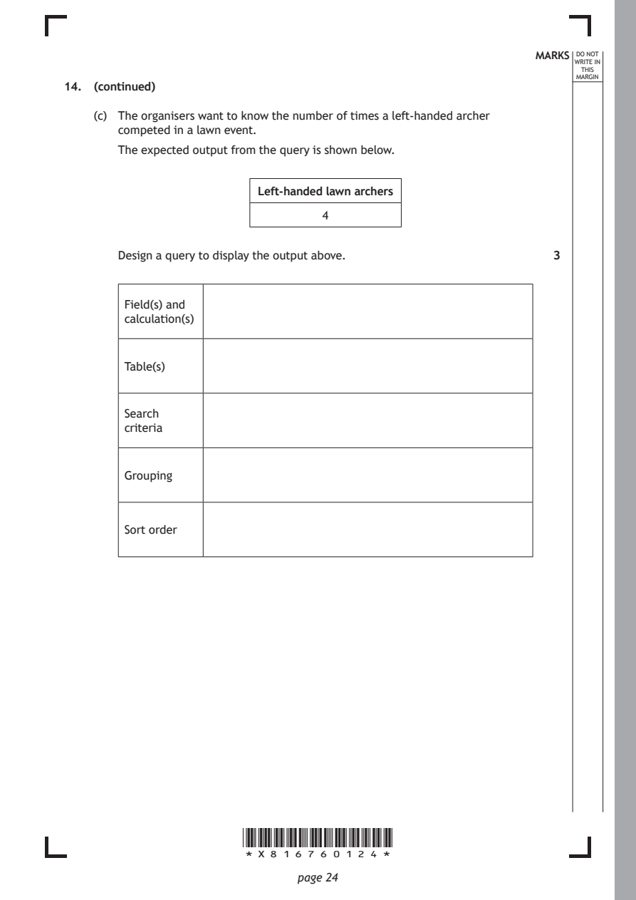
Selectable page text
MARKS DO NOT
WRITE IN
THIS
MARGIN
14. (continued)
(c) The organisers want to know the number of times a left‑handed archer
competed in a lawn event.
The expected output from the query is shown below.
Left‑handed lawn archers
4
Design a query to display the output above. 3
Field(s) and
calculation(s)
Table(s)
Search
criteria
Grouping
Sort order
*X816760124*
page 24PDF page 25
Question 15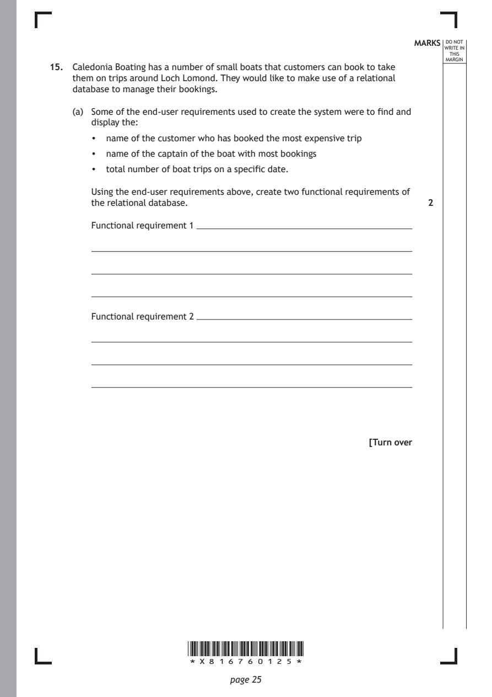
Selectable page text
MARKS DO NOT
WRITE IN
THIS
MARGIN
15. Caledonia Boating has a number of small boats that customers can book to take
them on trips around Loch Lomond. They would like to make use of a relational
database to manage their bookings.
(a) Some of the end‑user requirements used to create the system were to find and
display the:
• name of the customer who has booked the most expensive trip
• name of the captain of the boat with most bookings
• total number of boat trips on a specific date.
Using the end‑user requirements above, create two functional requirements of
the relational database. 2
Functional requirement 1
Functional requirement 2
[Turn over
*X816760125*
page 25PDF page 26
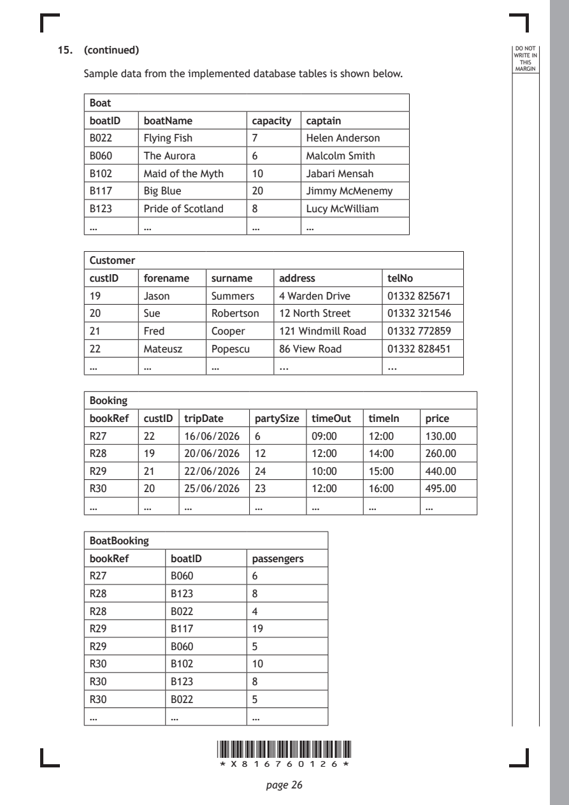
Selectable page text
15. (continued) DO NOT
WRITE IN
THIS
Sample data from the implemented database tables is shown below. MARGIN
Boat
boatID boatName capacity captain
B022 Flying Fish 7 Helen Anderson
B060 The Aurora 6 Malcolm Smith
B102 Maid of the Myth 10 Jabari Mensah
B117 Big Blue 20 Jimmy McMenemy
B123 Pride of Scotland 8 Lucy McWilliam
… … … …
Customer
custID forename surname address telNo
19 Jason Summers 4 Warden Drive 01332 825671
20 Sue Robertson 12 North Street 01332 321546
21 Fred Cooper 121 Windmill Road 01332 772859
22 Mateusz Popescu 86 View Road 01332 828451
… … … ... ...
Booking
bookRef custID tripDate partySize timeOut timeIn price
R27 22 16/06/2026 6 09:00 12:00 130.00
R28 19 20/06/2026 12 12:00 14:00 260.00
R29 21 22/06/2026 24 10:00 15:00 440.00
R30 20 25/06/2026 23 12:00 16:00 495.00
… … … … … … …
BoatBooking
bookRef boatID passengers
R27 B060 6
R28 B123 8
R28 B022 4
R29 B117 19
R29 B060 5
R30 B102 10
R30 B123 8
R30 B022 5
… … …
*X816760126*
page 26PDF page 27
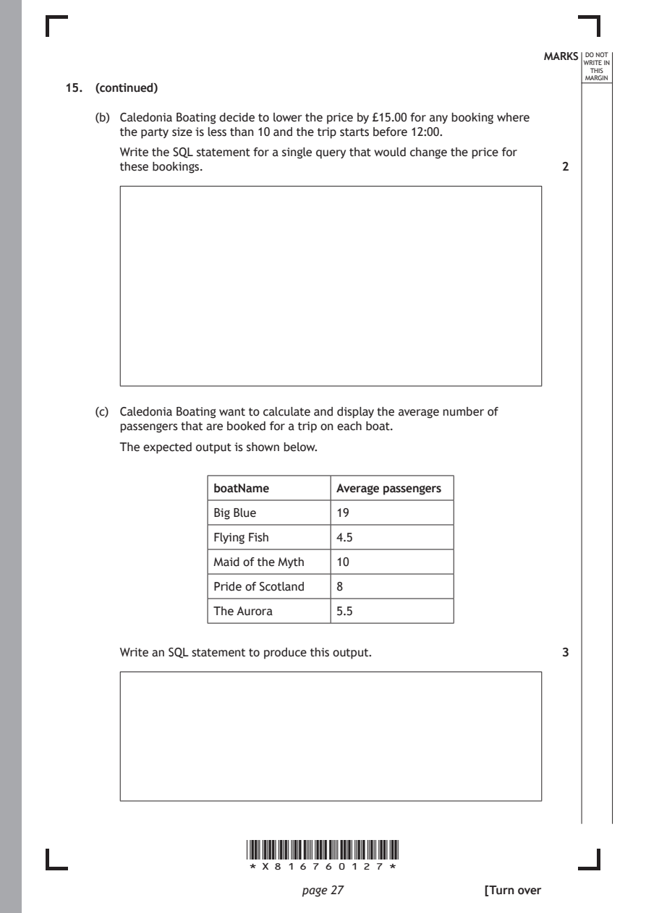
Selectable page text
MARKS DO NOT
WRITE IN
THIS
MARGIN
15. (continued)
(b) Caledonia Boating decide to lower the price by £15.00 for any booking where
the party size is less than 10 and the trip starts before 12:00.
Write the SQL statement for a single query that would change the price for
these bookings. 2
(c) Caledonia Boating want to calculate and display the average number of
passengers that are booked for a trip on each boat.
The expected output is shown below.
boatName Average passengers
Big Blue 19
Flying Fish 4.5
Maid of the Myth 10
Pride of Scotland 8
The Aurora 5.5
Write an SQL statement to produce this output. 3
*X816760127*
page 27 [Turn overPDF page 28
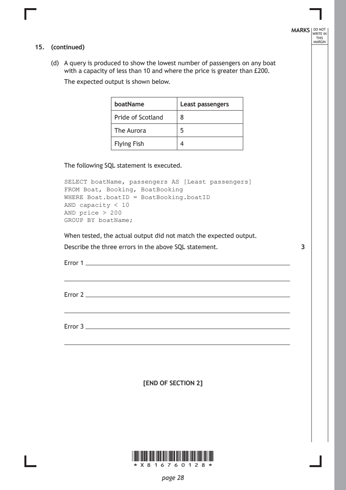
Selectable page text
MARKS DO NOT
WRITE IN
THIS
MARGIN
15. (continued)
(d) A query is produced to show the lowest number of passengers on any boat
with a capacity of less than 10 and where the price is greater than £200.
The expected output is shown below.
boatName Least passengers
Pride of Scotland 8
The Aurora 5
Flying Fish 4
The following SQL statement is executed.
SELECT boatName, passengers AS [Least passengers]
FROM Boat, Booking, BoatBooking
WHERE Boat.boatID = BoatBooking.boatID
AND capacity < 10
AND price > 200
GROUP BY boatName;
When tested, the actual output did not match the expected output.
Describe the three errors in the above SQL statement. 3
Error 1
Error 2
Error 3
[END OF SECTION 2]
*X816760128*
page 28PDF page 29
Question 16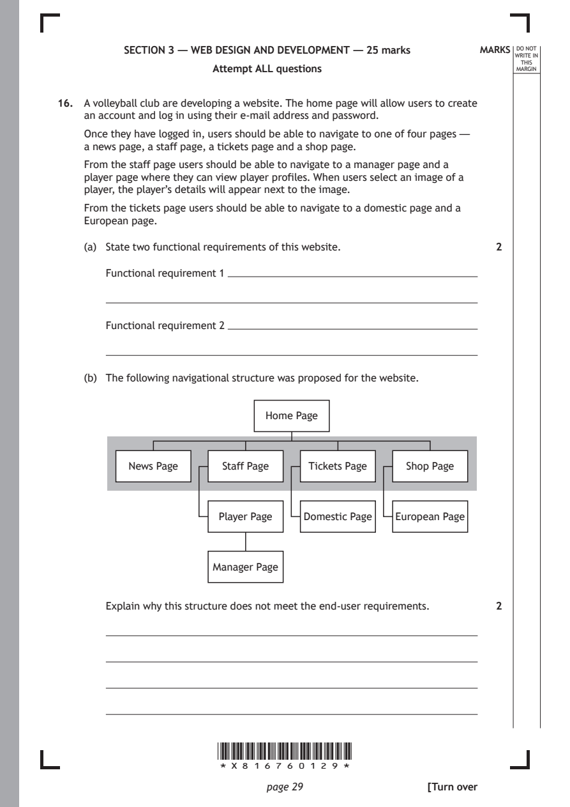
Selectable page text
SECTION 3 — WEB DESIGN AND DEVELOPMENT — 25 marks MARKS DO NOT
WRITE IN
THIS
Attempt ALL questions MARGIN
16. A volleyball club are developing a website. The home page will allow users to create
an account and log in using their e‑mail address and password.
Once they have logged in, users should be able to navigate to one of four pages —
a news page, a staff page, a tickets page and a shop page.
From the staff page users should be able to navigate to a manager page and a
player page where they can view player profiles. When users select an image of a
player, the player’s details will appear next to the image.
From the tickets page users should be able to navigate to a domestic page and a
European page.
(a) State two functional requirements of this website. 2
Functional requirement 1
Functional requirement 2
(b) The following navigational structure was proposed for the website.
Home Page
News Page Staff Page Tickets Page Shop Page
Player Page Domestic Page European Page
Manager Page
Explain why this structure does not meet the end‑user requirements. 2
*X816760129*
page 29 [Turn overPDF page 30
Question 17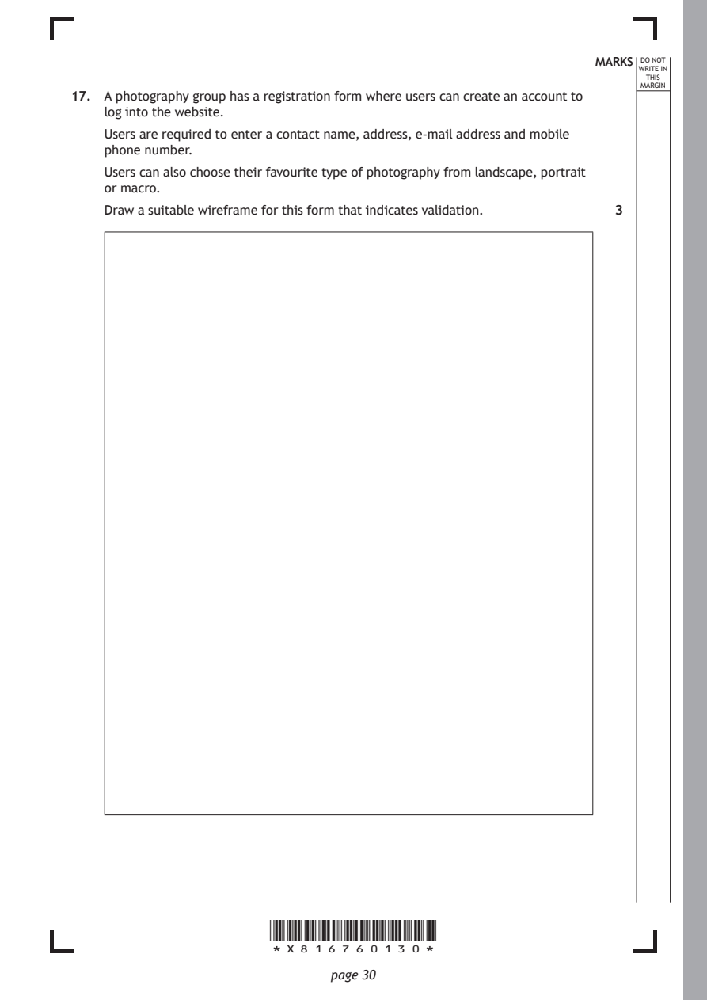
Selectable page text
MARKS DO NOT
WRITE IN
THIS
MARGIN
17. A photography group has a registration form where users can create an account to
log into the website.
Users are required to enter a contact name, address, e‑mail address and mobile
phone number.
Users can also choose their favourite type of photography from landscape, portrait
or macro.
Draw a suitable wireframe for this form that indicates validation. 3
*X816760130*
page 30PDF page 31
Question 18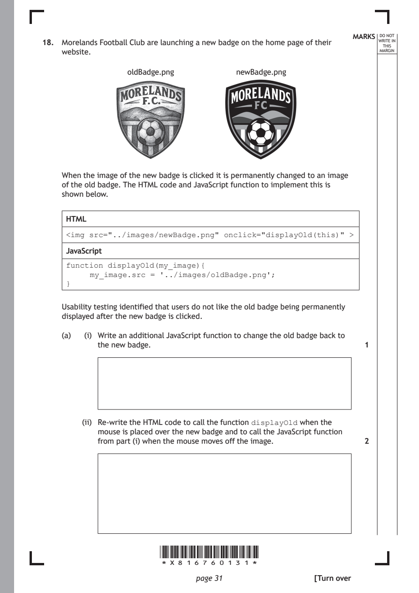
Selectable page text
MARKS DO NOT
18. Morelands Football Club are launching a new badge on the home page of their WRITE IN
THIS
website. MARGIN
oldBadge.png newBadge.png
When the image of the new badge is clicked it is permanently changed to an image
of the old badge. The HTML code and JavaScript function to implement this is
shown below.
HTML
<img src="../images/newBadge.png" onclick="displayOld(this)" >
JavaScript
function displayOld(my_image){
my_image.src = '../images/oldBadge.png';
}
Usability testing identified that users do not like the old badge being permanently
displayed after the new badge is clicked.
(a) (i) Write an additional JavaScript function to change the old badge back to
the new badge. 1
(ii) Re‑write the HTML code to call the function when the
displayOld
mouse is placed over the new badge and to call the JavaScript function
from part (i) when the mouse moves off the image. 2
*X816760131*
page 31 [Turn overPDF page 32
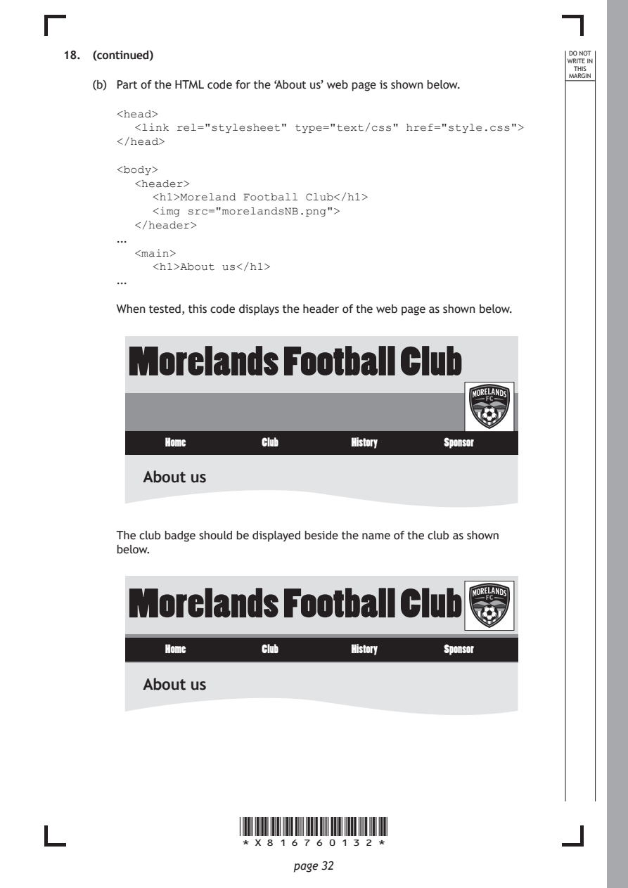
Selectable page text
18. (continued) DO NOT
WRITE IN
THIS
MARGIN
(b) Part of the HTML code for the ‘About us’ web page is shown below.
<head>
<link rel="stylesheet" type="text/css" href="style.css">
</head>
<body>
<header>
<h1>Moreland Football Club</h1>
<img src="morelandsNB.png">
</header>
...
<main>
<h1>About us</h1>
...
When tested, this code displays the header of the web page as shown below.
Morelands Football Club
Home Club History Sponsor
About us
The club badge should be displayed beside the name of the club as shown
below.
Morelands Football Club
Home Club History Sponsor
About us
*X816760132*
page 32PDF page 33
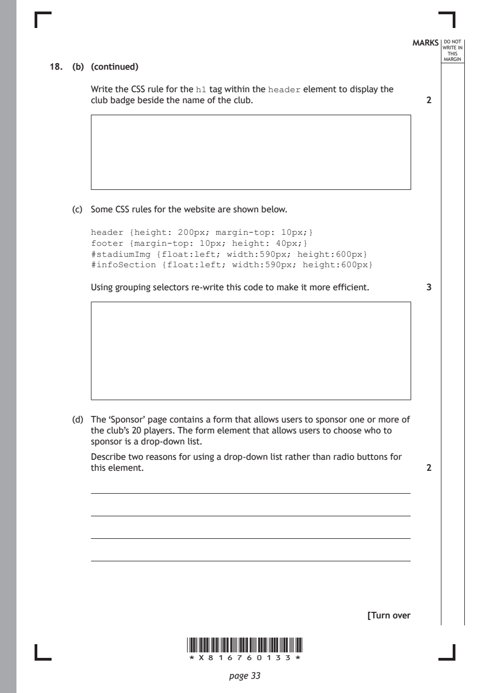
Selectable page text
MARKS DO NOT
WRITE IN
THIS
MARGIN
18. (b) (continued)
Write the CSS rule for the tag within the element to display the
h1 header
club badge beside the name of the club. 2
(c) Some CSS rules for the website are shown below.
header {height: 200px; margin‑top: 10px;}
footer {margin‑top: 10px; height: 40px;}
#stadiumImg {float:left; width:590px; height:600px}
#infoSection {float:left; width:590px; height:600px}
Using grouping selectors re‑write this code to make it more efficient. 3
(d) The ‘Sponsor’ page contains a form that allows users to sponsor one or more of
the club’s 20 players. The form element that allows users to choose who to
sponsor is a drop‑down list.
Describe two reasons for using a drop‑down list rather than radio buttons for
this element. 2
[Turn over
*X816760133*
page 33PDF page 34
Question 19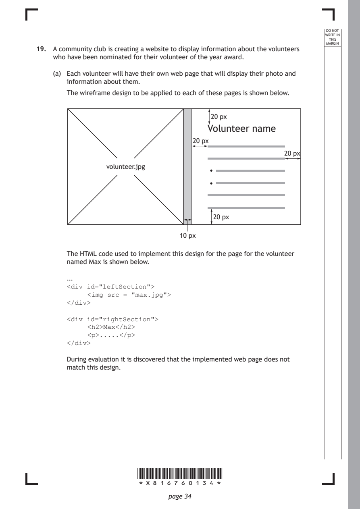
Selectable page text
DO NOT
WRITE IN
THIS
MARGIN
19. A community club is creating a website to display information about the volunteers
who have been nominated for their volunteer of the year award.
(a) Each volunteer will have their own web page that will display their photo and
information about them.
The wireframe design to be applied to each of these pages is shown below.
20 px
Volunteer name
20 px
20 px
volunteer.jpg
20 px
10 px
The HTML code used to implement this design for the page for the volunteer
named Max is shown below.
...
<div id="leftSection">
<img src = "max.jpg">
</div>
<div id="rightSection">
<h2>Max</h2>
<p>.....</p>
</div>
During evaluation it is discovered that the implemented web page does not
match this design.
*X816760134*
page 34PDF page 35
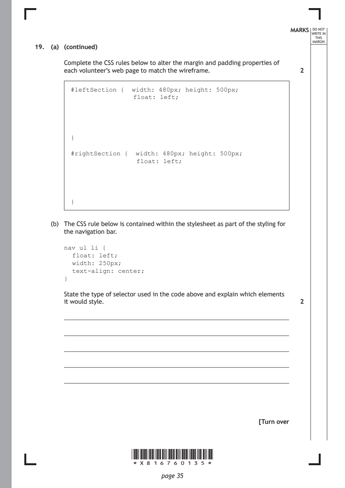
Selectable page text
MARKS DO NOT
WRITE IN
THIS
MARGIN
19. (a) (continued)
Complete the CSS rules below to alter the margin and padding properties of
each volunteer’s web page to match the wireframe. 2
#leftSection { width: 480px; height: 500px;
float: left;
}
#rightSection { width: 480px; height: 500px;
float: left;
}
(b) The CSS rule below is contained within the stylesheet as part of the styling for
the navigation bar.
nav ul li {
float: left;
width: 250px;
text‑align: center;
}
State the type of selector used in the code above and explain which elements
it would style. 2
[Turn over
*X816760135*
page 35PDF page 36
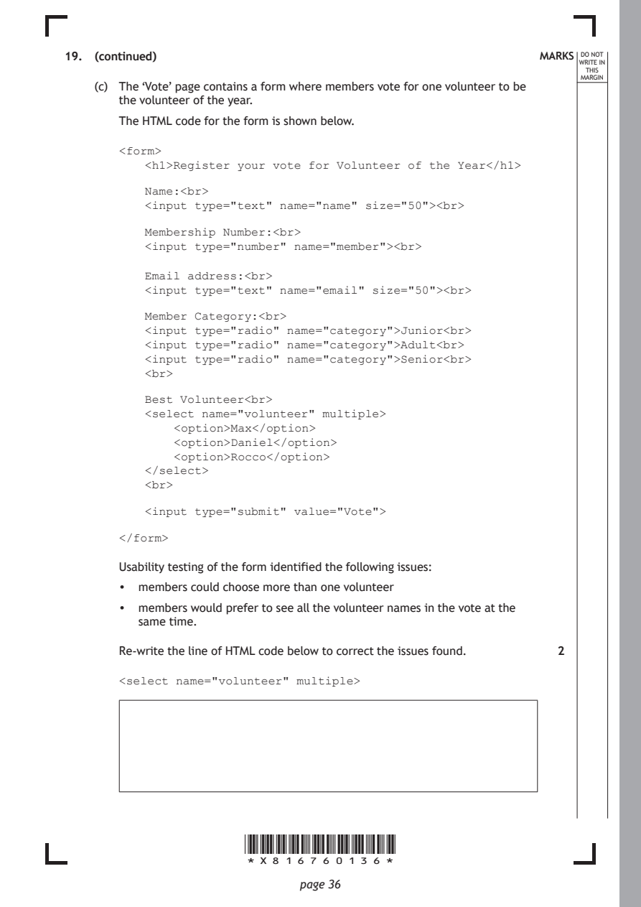
Selectable page text
19. (continued) MARKS DO NOT
WRITE IN
THIS
MARGIN
(c) The ‘Vote’ page contains a form where members vote for one volunteer to be
the volunteer of the year.
The HTML code for the form is shown below.
<form>
<h1>Register your vote for Volunteer of the Year</h1>
Name:<br>
<input type="text" name="name" size="50"><br>
Membership Number:<br>
<input type="number" name="member"><br>
Email address:<br>
<input type="text" name="email" size="50"><br>
Member Category:<br>
<input type="radio" name="category">Junior<br>
<input type="radio" name="category">Adult<br>
<input type="radio" name="category">Senior<br>
<br>
Best Volunteer<br>
<select name="volunteer" multiple>
<option>Max</option>
<option>Daniel</option>
<option>Rocco</option>
</select>
<br>
<input type="submit" value="Vote">
</form>
Usability testing of the form identified the following issues:
• members could choose more than one volunteer
• members would prefer to see all the volunteer names in the vote at the
same time.
Re‑write the line of HTML code below to correct the issues found. 2
<select name="volunteer" multiple>
*X816760136*
page 36PDF page 37
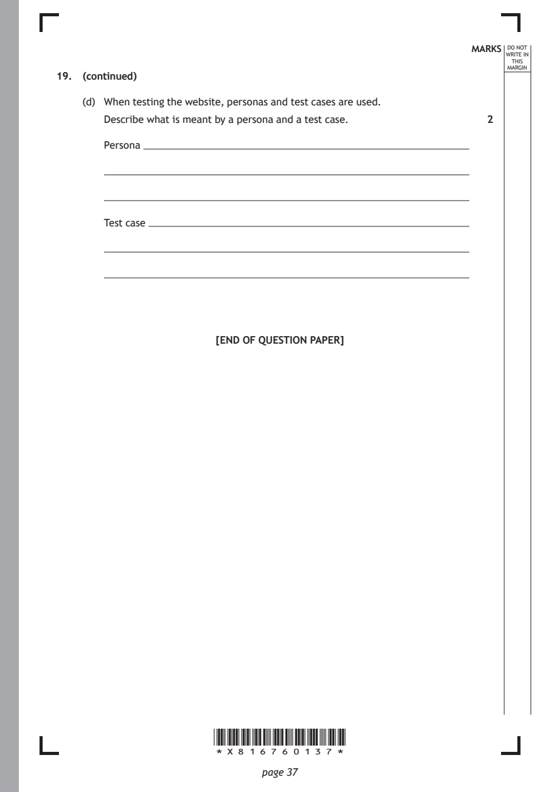
Selectable page text
MARKS DO NOT
WRITE IN
THIS
MARGIN
19. (continued)
(d) When testing the website, personas and test cases are used.
Describe what is meant by a persona and a test case. 2
Persona
Test case
[END OF QUESTION PAPER]
*X816760137*
page 37PDF page 38
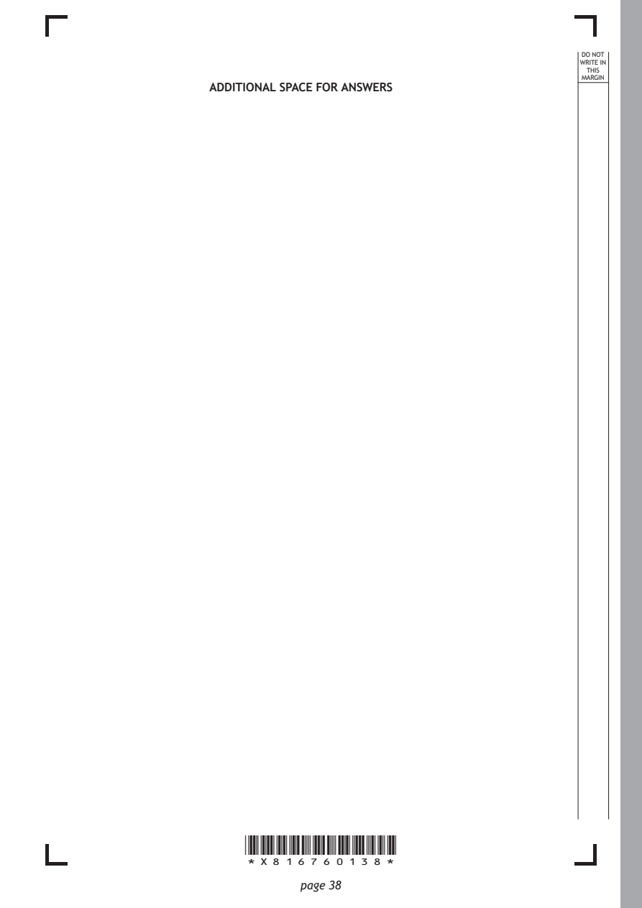
Selectable page text
DO NOT
WRITE IN
THIS
MARGIN
ADDITIONAL SPACE FOR ANSWERS
*X816760138*
page 38PDF page 39
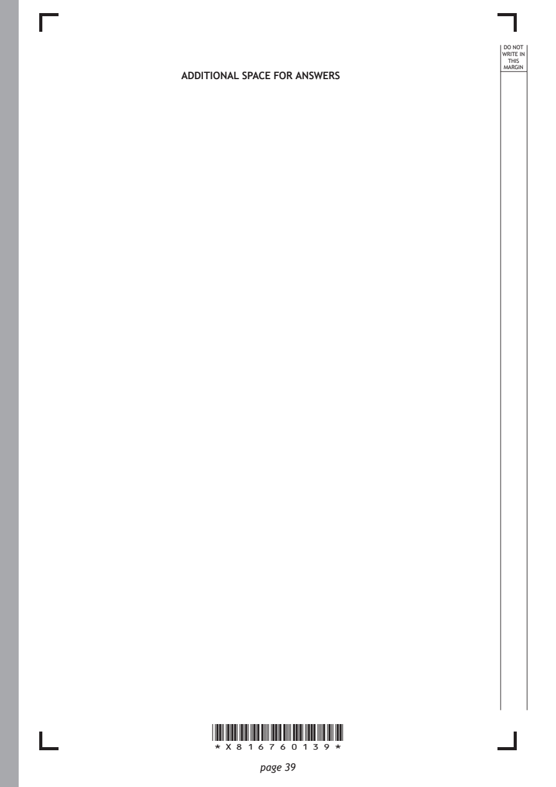
Selectable page text
DO NOT
WRITE IN
THIS
MARGIN
ADDITIONAL SPACE FOR ANSWERS
*X816760139*
page 39PDF page 40
Selectable page text
[BLANK PAGE]
DO NOT WRITE ON THIS PAGE
*X816760140*
page 40